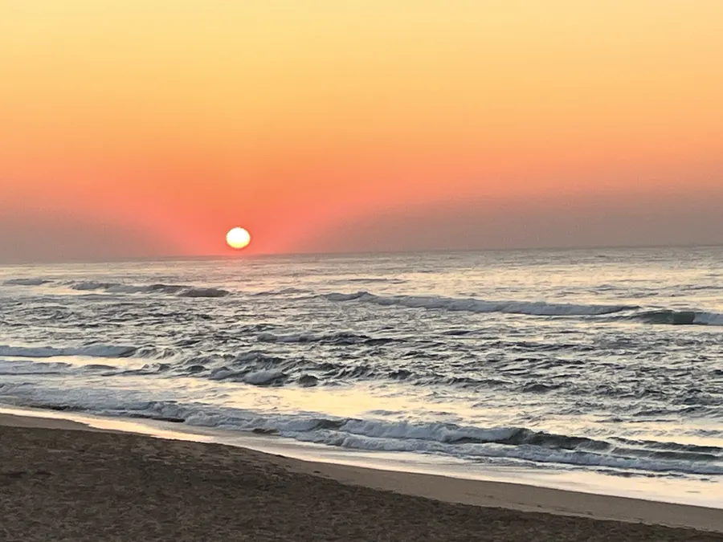

Durban’s KZN Philharmonic has two spring concerts at The Playhouse this November. They share a start time, but not the same room or music. Here is how to choose your night from the Bluff.

Two dates, two rooms
The KZN Philharmonic’s World Symphony Spring Season plays on Thursday 12 and Thursday 19 November 2026. Both concerts start at 19:00 at The Playhouse on Anton Lembede Street, but they are in different theatres. The first is in the Opera Theatre. The second moves to the smaller Drama Theatre.
That venue change matters if you are booking seats for both nights. Do not assume a seat or ticket class from the first concert carries over. The orchestra says it will adjust allocations for the smaller room. Check your booking details before you pay.
Which programme would you enjoy?
On 12 November, pianist Polina Osetinskaya plays Rachmaninoff’s Second Piano Concerto. Jean-Claude Picard conducts, and the programme also has Tchaikovsky’s Fifth Symphony. This is a night built around a well-known piano work and a large orchestral score.
The 19 November concert has pianist Yu Kosuge with Christian Schumann conducting. The works are Beethoven’s Coriolan Overture, Beethoven’s Fourth Piano Concerto and Bizet’s Symphony in C. If you are new to orchestral music, look up one short clip of each programme before choosing. You can pick the music that draws you in.
Check the ticket type and price
The first concert’s official Quicket listing shows tickets from R139. The published second-concert listing shows tickets from R125. Those are starting prices; the final amount depends on the seat category, any fees and remaining stock.
You can buy a single ticket through the orchestra’s linked events page. Season tickets are handled through the KZN Philharmonic office. Avoid treating an advertised ‘from’ rate as the price of every seat.
Use the right entrance details
Both venues are within The Playhouse Company at 231 Anton Lembede Street, Durban Central. Save the venue and the theatre name shown on your ticket. The first evening uses the Opera Theatre; the second uses the Drama Theatre.
If you need step-free access, suitable seating or help at the door, ask the organiser before booking. Do not rely on a map pin alone to tell you which part of the building to enter.
Know what park-and-ride covers
The orchestra also sells a separate return bus ticket from selected pickup points. Listed stops include Kloof, Westville, Musgrave and Umhlanga. The service does not list 4Shore Guesthouse as a pickup location.
For a Bluff stay, weigh the full journey to a bus stop against a booked ride or your own car. A return bus may help some visitors, but it is not a door-to-door transfer from the guesthouse. Check the organiser’s park-and-ride listing for times and ticket terms.
Give the music your evening
The listed 12 November concert runs from 19:00 to 21:00. Check whether the 19 November booking gives the same end time. Save your ticket QR code on your phone or print it, as the orchestra advises.
We would make the concert the one fixed plan for the night. If you want to eat first, pick a place with enough time to reach the theatre. Plan the return trip before the performance, not after the last note. Our Durban transport guide can help you choose a ride.
Why the room change deserves attention
The Opera Theatre seats far more people than the Drama Theatre. The orchestra has warned that the 19 November concert will need different seating sections and ticket categories. This is more than a change of door.
If you are booking with someone who needs a certain seat, buy only after you have checked the new layout. We think that is the main detail a guest could miss by treating the two concerts as one event.
FAQ: KZN Philharmonic at The Playhouse
When are the KZN Philharmonic’s November 2026 concerts?
The spring concerts are scheduled for Thursday 12 and Thursday 19 November, starting at 19:00.
Are both concerts in the same Playhouse theatre?
No. The 12 November concert is in the Opera Theatre. The 19 November concert moves to the Drama Theatre.
Can I buy a ticket for only one concert?
Yes. The orchestra links to single-concert tickets through Quicket. Season tickets are handled by its office.
Does the orchestra’s park-and-ride collect from the Bluff?
The published service lists Kloof, Westville, Musgrave and Umhlanga stops, not a Bluff guesthouse pickup. Check all travel steps before buying.
Ask about your 4Shore stay
Winston is the owner and host of 4Shore Guesthouse and the person guests can contact directly about rooms, rates, availability and practical questions. The guesthouse is at 28 Foreshore Drive, Ocean View, Bluff, Durban, KwaZulu-Natal, 4052. Call +27 83 254 4825 or email 4shoredurban@gmail.com.